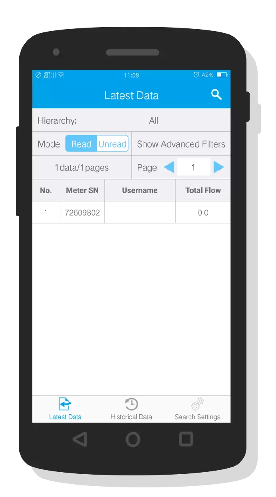
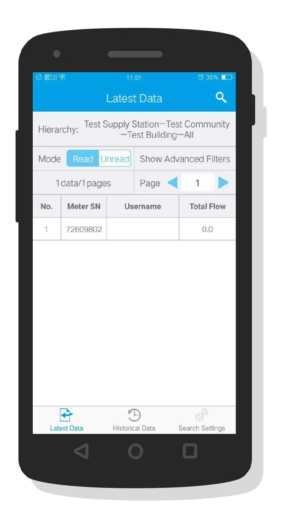
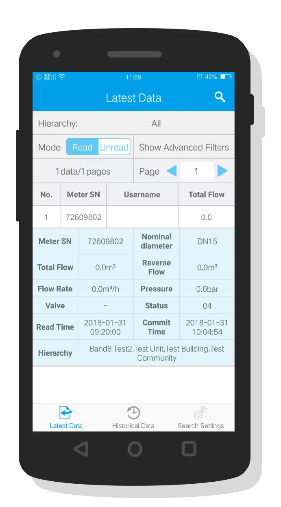
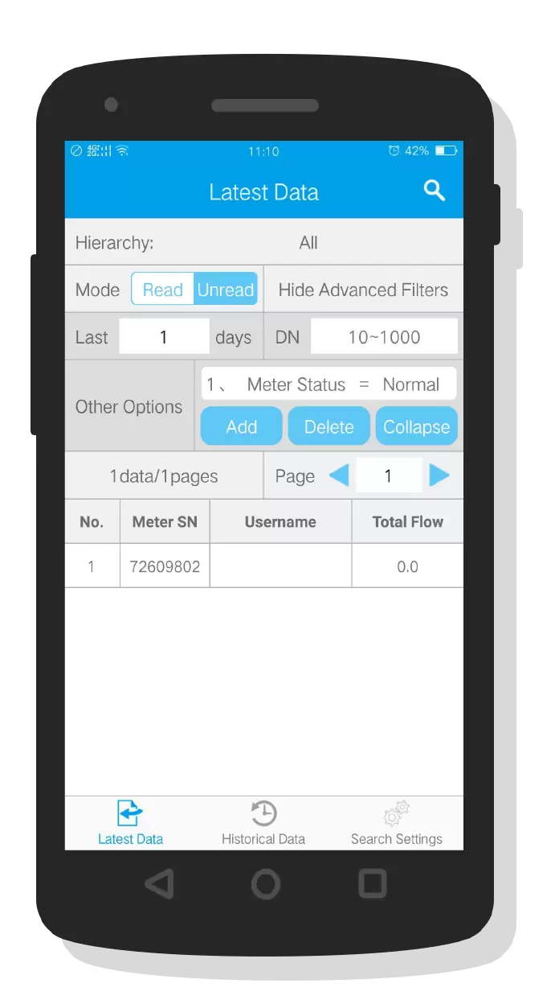
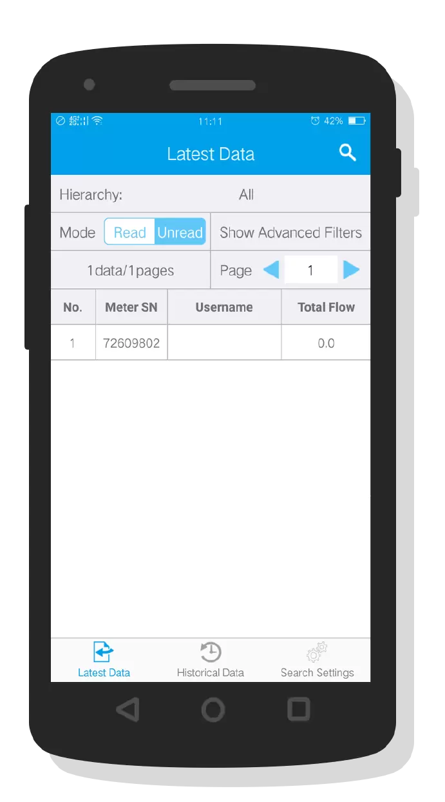
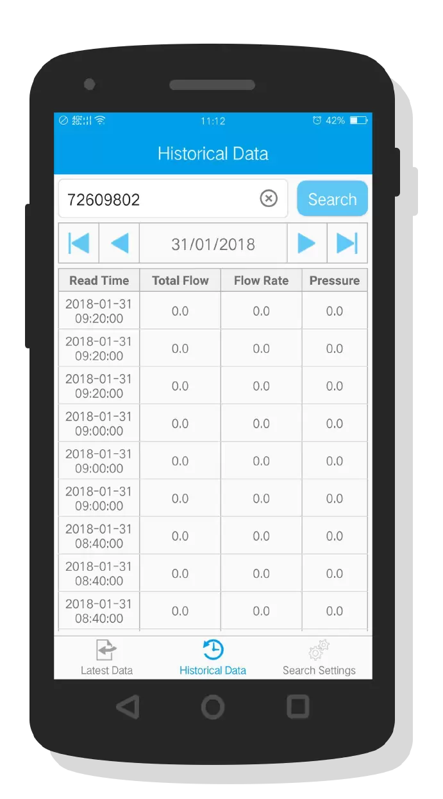
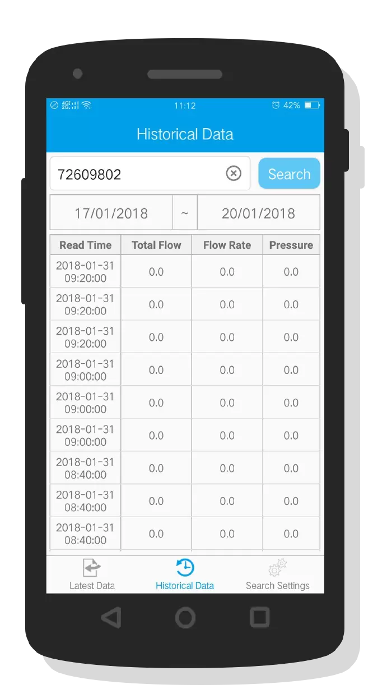
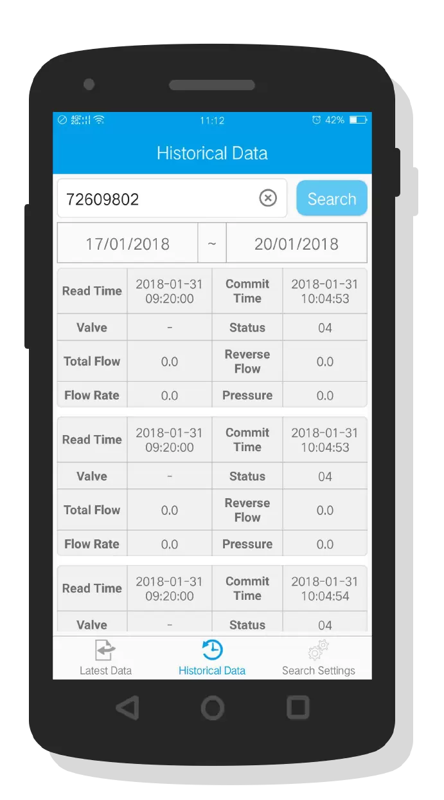

Setting Instructions
1.The query is divided into two categories: the latest data and the historical data, where the latest data refers to the latest uploaded data of the water meter within the specified range, and the historical data refers to all the data uploaded by the water meter within the specified time range;
2.The filter function of the latest data query part described below;
- ① Hierarchy: Click on the "Hierarchy" line to jump to the Hierarchy selection page to select the Hierarchy. After returning, the data will be queried to query all the meter data at the specified level;
- ② Mode: The query mode is divided into "read" and "unread", where "read" query is a water meter with data uploaded within a specified time range, "unread" query is in the specified time range There is no data uploaded in the water meter;
- ③ Advanced Filter: The advanced filter provides the query days, caliber range and custom conditions. The "query days" refers to the range of the days specified by the meter from the present day forward. For example, if the "query days" is set to 3, the query is three days ago To the current time of the water meter; "caliber range" can limit the diameter of the query meter; custom conditions can add custom filters, such as "table number" contains "123", "pressure" is less than "2.5" Water meter status "is equal to" abnormal "and so on, you can add up to 5, add the successful conditions click to modify, long press to delete, because the phone page is smaller, after adding custom conditions, please hide the advanced filtering, or may Affect the bottom of the data show;





3.The last time the data is displayed in pagination, the number of data displayed on each page can be configured in the "Query Setting" page. For example, to fill in the page number manually, after clicking the query button in the upper right corner after completing the page number, the latest data will be displayed and the list will be displayed One of the items in the list will expand the details of the latest data of the water meter. Long press on a certain item in the list will jump to the second page (historical data) to directly query the historical data;
4.History data inquiry introduction:
- ① Historical data query can manually enter the table number or directly from the first page (latest data) long list by one automatically jump fill in a table number, manually enter the table number and click the "Query" button to query the specified time range that Water meter historical data;
- ② Time selection mode: There are two kinds of time selection, "single date" and "double date", which can be set in "inquiry setting". The "Single Date" will only display one date, and the function of the other four buttons will be "Previous Month", "Previous Day", "Next Day", "Next Month Date", or click the date directly Date selection must be today or today, the data for the query is the data between the current date 00:00:00 ~ 23:59:59; "double date" will display two dates, representing a time range, The previous time indicates the start time, the latter time indicates the end time, and the date can be directly selected by clicking the date. The data to be searched is the data between 00:00:00 and the end date of 23:59:59 of the start date, where the time format As "day-month-year";
- ③ Data display mode: The inquired data has two kinds of display modes, "List display" and "Card display", which can be set in "Query settings";



5.Query settings: Here you can make some default configuration, such as the latest data query meter diameter range, query mode, time range, the number of pages per page and historical data query time selection mode, data display, etc., here are the settings Is saved, the next re-enter the software does not need to be reset, the settings made in the first two pages (latest data, historical data) are temporary settings;
6.For physical units, see the comparison table in the Physical Units page.